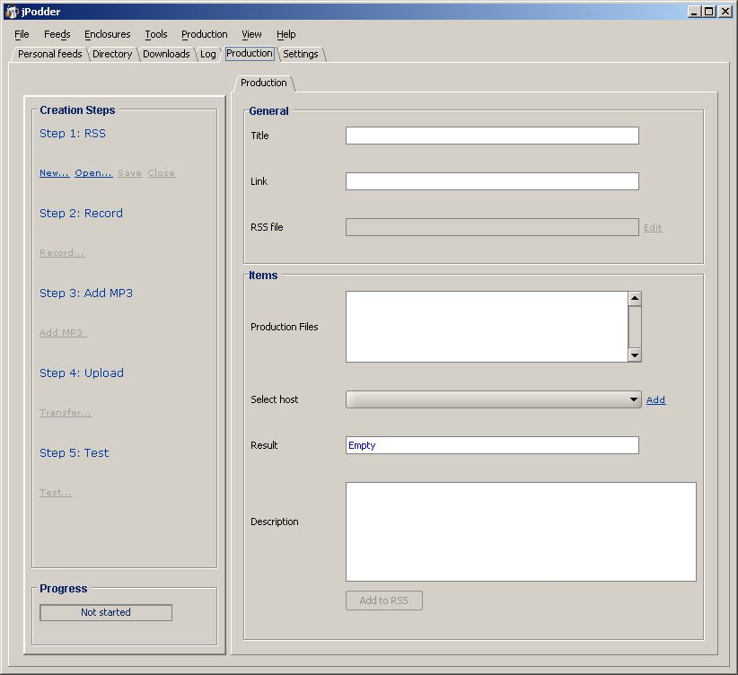

The production of a Podcast is another cool feature of jPodder allowing you to be your own Radio Station.
The main view of the production is depicted below. It consists of a a general section and an 'items' section. You can think of an item as a single entry for your podcast. The item contains information like a description, a publication date but also, as you will learn in this chapter, the enclosure information. The enclosure information contains the URL or link to your podcast.
